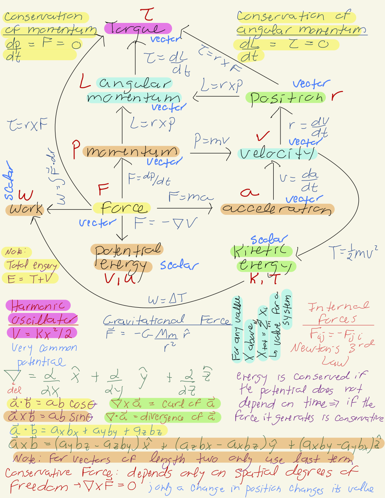

Short repetition from last week. Discussion of momentum and angular momentum conservation. Reading suggestion: Taylor sections 3.4 and 3.5 and chapter 4.
Examples of application of conservations laws (see chapter 4 of Taylor) and exercises (see next slide). Introducing the Velocity Verlet algorithm and the Earth Sun problem for homework 5.
Conservative forces and discussion of homework exercises. Problem solving. Deadline fourth homework.
Taylor chapter 4 is the essential reading. See also chapter 7 of Malthe-Sørenssen (in particule section 7.5) for exercise 6 in homework 4
We study a classical electron which moves in the \( x \)-direction along a surface. The force from the surface is
$$ \boldsymbol{F}(x)=-F_0\sin{(\frac{2\pi x}{b})}\boldsymbol{i}. $$Show that the force is conservative.
Show that the force
$$ \boldsymbol{F}(\boldsymbol{r})=\gamma \frac{\boldsymbol{r}}{r^3}, $$is a conservative force. Here \( \gamma \) is a constant and \( r=\sqrt{x^2+y^2+z^2} \) and \( \boldsymbol{r}=x\boldsymbol{i}+y\boldsymbol{j}+z\boldsymbol{k} \).

A conservative force is a force whose property is that the total work done in moving an object between two points is independent of the taken path. This means that the work on an object under the influence of a conservative force, is independent on the path of the object. It depends only on the spatial degrees of freedom and it is possible to assign a numerical value for the potential at any point. It leads to conservation of energy. The gravitational force is an example of a conservative force.
First, a conservative force depends only on the spatial degrees of freedom. This is a necessary condition for obtaining a path integral which is independent of path. The important condition for the final work to be independent of the path is that the curl of the force is zero, that is
$$ \boldsymbol{\nabla} \times \boldsymbol{F}=0 $$The total momentum \( \boldsymbol{P} \) is defined as the sum of the individual momenta, meaning that we can rewrite
$$ \boldsymbol{F}_1^{\mathrm{net}}+\boldsymbol{F}_2^{\mathrm{net}}=\frac{d\boldsymbol{p}_1}{dt}+\frac{d\boldsymbol{p}_2}{dt}=\frac{d\boldsymbol{P}}{dt}, $$that is the derivate with respect to time of the total momentum. If we now write the net forces as sums of the external plus internal forces between the objects we have
$$ \frac{d\boldsymbol{P}}{dt}=\boldsymbol{F}_1^{\mathrm{ext}}+\boldsymbol{F}_{12}+\boldsymbol{F}_2^{\mathrm{ext}}+\boldsymbol{F}_{21}=\boldsymbol{F}_1^{\mathrm{ext}}+\boldsymbol{F}_2^{\mathrm{ext}}. $$The derivative of the total momentum is just the sum of the external forces. If we assume that the external forces are zero and that only internal (here two-body forces) are at play, we obtain the important result that the derivative of the total momentum is zero. This means again that the total momentum is a constant of the motion and conserved quantity. This is a very important result that we will use in many applications to come.
Let us now general to several objects \( N \) and let us also assume that there are no external forces. We will label such a system as an isolated system.
Newton's second law, \( \boldsymbol{F}=m\boldsymbol{a} \), can be written for a particle \( i \) as
$$ \begin{equation} \boldsymbol{F}_i=\sum_{j\ne i}^N \boldsymbol{F}_{ij}=m_i\boldsymbol{a}_i, \label{_auto1} \end{equation} $$where \( \boldsymbol{F}_i \) (a single subscript) denotes the net force acting on \( i \) from the other objects/particles. Because the mass of \( i \) is fixed and we assume it does not change with time, one can see that
$$ \begin{equation} \boldsymbol{F}_i=\frac{d}{dt}m_i\boldsymbol{v}_i=\sum_{j\ne i}^N\boldsymbol{F}_{ij}. \label{_auto2} \end{equation} $$Now, one can sum over all the objects/particles and obtain
$$ \frac{d}{dt}\sum_i m_iv_i=\sum_{ij, i\ne j}^N\boldsymbol{F}_{ij}=0. $$How did we arrive at the last step? We rewrote the double sum as
$$ \sum_{ij, i\ne j}^N\boldsymbol{F}_{ij}=\sum_i^N\sum_{j>i}\left(\boldsymbol{F}_{ij}+\boldsymbol{F}_{ji}\right), $$and using Newton's third law which states that \( \boldsymbol{F}_{ij}=-\boldsymbol{F}_{ji} \), we obtain that the net sum over all the two-particle forces is zero when we only consider so-called internal forces. Stated differently, the last step made use of the fact that for every term \( ij \), there is an equivalent term \( ji \) with opposite force. Because the momentum is defined as \( m\boldsymbol{v} \), for a system of particles, we have thus
$$ \begin{equation} \frac{d}{dt}\sum_im_i\boldsymbol{v}_i=0,~~{\rm for~isolated~particles}. \label{_auto3} \end{equation} $$By "isolated" one means that the only force acting on any particle \( i \) are those originating from other particles in the sum, i.e. "no external" forces. Thus, Newton's third law leads to the conservation of total momentum,
$$ \boldsymbol{P}=\sum_i m_i\boldsymbol{v}_i, $$and we have
$$ \frac{d}{dt}\boldsymbol{P}=0. $$The angular momentum is defined as
$$ \begin{equation} \boldsymbol{L}=\boldsymbol{r}\times\boldsymbol{p}=m\boldsymbol{r}\times\boldsymbol{v}. \label{_auto4} \end{equation} $$It means that the angular momentum is perpendicular to the plane defined by position \( \boldsymbol{r} \) and the momentum \( \boldsymbol{p} \) via \( \boldsymbol{r}\times \boldsymbol{p} \).
The rate of change of the angular momentum is
$$ \frac{d\boldsymbol{L}}{dt}=m\boldsymbol{v}\times\boldsymbol{v}+m\boldsymbol{r}\times\dot{\boldsymbol{v}}=\boldsymbol{r}\times{\boldsymbol{F}} $$The first term is zero because \( \boldsymbol{v} \) is parallel to itself, and the second term defines the so-called torque. If \( \boldsymbol{F} \) is parallel to \( \boldsymbol{r} \) then the torque is zero and we say that angular momentum is conserved.
If the force is not radial, \( \boldsymbol{r}\times\boldsymbol{F}\ne 0 \) as above, and angular momentum is no longer conserved,
$$ \begin{equation} \frac{d\boldsymbol{L}}{dt}=\boldsymbol{r}\times\boldsymbol{F}\equiv\boldsymbol{\tau}, \label{_auto5} \end{equation} $$where \( \boldsymbol{\tau} \) is the torque.
Let us assume we have an initial position \( \boldsymbol{r}_0=x_0\boldsymbol{e}_1+y_0\boldsymbol{e}_2 \) at a time \( t_0=0 \). We add now a force in the positive \( x \)-direction
$$ \boldsymbol{F}=F_x\boldsymbol{e}_1=\frac{d\boldsymbol{p}}{dt}, $$where we used the force as defined by the time derivative of the momentum.
We can use this force (and its pertinent acceleration) to find the velocity via the relation
$$ \boldsymbol{v}(t)=\boldsymbol{v}_0+\int_{t_0}^t\boldsymbol{a}dt', $$and with \( \boldsymbol{v}_0=0 \) we have
$$ \boldsymbol{v}(t)=\int_{t_0}^t\frac{\boldsymbol{F}}{m}dt', $$where \( m \) is the mass of the object.
Since the force acts only in the \( x \)-direction, we have after integration
$$ \boldsymbol{v}(t)=\frac{\boldsymbol{F}}{m}t=\frac{F_x}{m}t\boldsymbol{e}_1=v_x(t)\boldsymbol{e}_1. $$The momentum is in turn given by \( \boldsymbol{p}=p_x\boldsymbol{e}_1=mv_x\boldsymbol{e}_1=F_xt\boldsymbol{e}_1 \).
Integrating over time again we find the final position as (note the force depends only on the \( x \)-direction)
$$ \boldsymbol{r}(t)=(x_0+\frac{1}{2}\frac{F_x}{m}t^2) \boldsymbol{e}_1+y_0\boldsymbol{e}_2. $$There is no change in the position in the \( y \)-direction since the force acts only in the \( x \)-direction.
We can now compute the angular momentum given by
$$ \boldsymbol{l}=\boldsymbol{r}\times\boldsymbol{p}=\left[(x_0+\frac{1}{2}\frac{F_x}{m}t^2) \boldsymbol{e}_1+y_0\boldsymbol{e}_2\right]\times F_xt\boldsymbol{e}_1. $$Computing the cross product we find
$$ \boldsymbol{l}=-y_0F_xt\boldsymbol{e}_3=-y_0F_xt\boldsymbol{e}_z. $$The torque is the time derivative of the angular momentum and we have
$$ \boldsymbol{\tau}=-y_0F_x\boldsymbol{e}_3=-y_0F_x\boldsymbol{e}_z. $$The torque is non-zero and angular momentum is not conserved.
One can write the torque about a given axis, which we will denote as \( \hat{z} \), in polar coordinates, where
$$ \begin{eqnarray} x&=&r\sin\theta\cos\phi,~~y=r\sin\theta\cos\phi,~~z=r\cos\theta, \end{eqnarray} $$to find the \( z \) component of the torque,
$$ \begin{eqnarray} \tau_z&=&xF_y-yF_x\\ \nonumber &=&-r\sin\theta\left\{\cos\phi \partial_y-\sin\phi \partial_x\right\}V(x,y,z). \end{eqnarray} $$One can use the chain rule to write the partial derivative w.r.t. \( \phi \) (keeping \( r \) and \( \theta \) fixed),
$$ \begin{eqnarray} \partial_\phi&=&\frac{\partial x}{\partial\phi}\partial_x+\frac{\partial_y}{\partial\phi}\partial_y +\frac{\partial z}{\partial\phi}\partial_z\\ \nonumber &=&-r\sin\theta\sin\phi\partial_x+\sin\theta\cos\phi\partial_y. \end{eqnarray} $$Combining the two equations,
$$ \begin{eqnarray} \tau_z&=&-\partial_\phi V(r,\theta,\phi). \end{eqnarray} $$Thus, if the potential is independent of the azimuthal angle \( \phi \), there is no torque about the \( z \) axis and \( L_z \) is conserved.
For a system of isolated particles, one can write
$$ \begin{eqnarray} \frac{d}{dt}\sum_i\boldsymbol{L}_i&=&\sum_{i\ne j}\boldsymbol{r}_i\times \boldsymbol{F}_{ij}\\ \nonumber &=&\frac{1}{2}\sum_{i\ne j} \boldsymbol{r}_i\times \boldsymbol{F}_{ij}+\boldsymbol{r}_j\times\boldsymbol{F}_{ji}\\ \nonumber &=&\frac{1}{2}\sum_{i\ne j} (\boldsymbol{r}_i-\boldsymbol{r}_j)\times\boldsymbol{F}_{ij}=0, \end{eqnarray} $$where the last step used Newton's third law, \( \boldsymbol{F}_{ij}=-\boldsymbol{F}_{ji} \). If the forces between the particles are radial, i.e. \( \boldsymbol{F}_{ij} ~||~ (\boldsymbol{r}_i-\boldsymbol{r}_j) \), then each term in the sum is zero and the net angular momentum is fixed. Otherwise, you could imagine an isolated system that would start spinning spontaneously.
Energy conservation is most convenient as a strategy for addressing problems where time does not appear. For example, a particle goes from position \( x_0 \) with speed \( v_0 \), to position \( x_f \); what is its new speed? However, it can also be applied to problems where time does appear, such as in solving for the trajectory \( x(t) \), or equivalently \( t(x) \).
Energy is conserved in the case where the potential energy, \( V(\boldsymbol{r}) \), depends only on position, and not on time. The force is determined by \( V \),
$$ \begin{equation} \boldsymbol{F}(\boldsymbol{r})=-\boldsymbol{\nabla} V(\boldsymbol{r}). \label{_auto6} \end{equation} $$We say a force is conservative if it satisfies the following conditions:
The energy \( E \) of a given system is defined as the sum of kinetic and potential energies,
$$ E=K+V(\boldsymbol{r}). $$We define the potential energy at a point \( \boldsymbol{r} \) as the negative work done from a starting point \( \boldsymbol{r}_0 \) to a final point \( \boldsymbol{r} \)
$$ V(\boldsymbol{r})=-W(\boldsymbol{r}_0\rightarrow\boldsymbol{r})= -\int_{\boldsymbol{r}_0}^{\boldsymbol{r}}d\boldsymbol{r}'\boldsymbol{F}(\boldsymbol{r}'). $$If the potential depends on the path taken between these two points there is no unique potential.
We study a classical electron which moves in the \( x \)-direction along a surface. The force from the surface is
$$ \boldsymbol{F}(x)=-F_0\sin{(\frac{2\pi x}{b})}\boldsymbol{e}_1. $$The constant \( b \) represents the distance between atoms at the surface of the material, \( F_0 \) is a constant and \( x \) is the position of the electron.
This is indeed a conservative force since it depends only on position and its curl is zero, that is \( -\boldsymbol{\nabla}\times \boldsymbol{F}=0 \). This means that energy is conserved and the integral over the work done by the force is independent of the path taken. We will come back to this in more detail next week.
Using the work-energy theorem we can find the work \( W \) done when moving an electron from a position \( x_0 \) to a final position \( x \) through the integral
$$ W=-\int_{x_0}^x \boldsymbol{F}(x')dx' = \int_{x_0}^x F_0\sin{(\frac{2\pi x'}{b})} dx', $$which results in
$$ W=\frac{F_0b}{2\pi}\left[\cos{(\frac{2\pi x}{b})}-\cos{(\frac{2\pi x_0}{b})}\right]. $$Since this is related to the change in kinetic energy we have, with \( v_0 \) being the initial velocity at a time \( t_0 \),
$$ v = \pm\sqrt{\frac{2}{m}\frac{F_0b}{2\pi}\left[\cos{(\frac{2\pi x}{b})}-\cos{(\frac{2\pi x_0}{b})}\right]+v_0^2}. $$The potential energy, due to energy conservation is
$$ V(x)=V(x_0)+\frac{1}{2}mv_0^2-\frac{1}{2}mv^2, $$with \( v \) given by the velocity from above.
We can now, in order to find a more explicit expression for the potential energy at a given value \( x \), define a zero level value for the potential. The potential is defined, using the work-energy theorem, as
$$ V(x)=V(x_0)+\int_{x_0}^x (-F(x'))dx', $$and if you recall the definition of the indefinite integral, we can rewrite this as
$$ V(x)=\int (-F(x'))dx'+C, $$where \( C \) is an undefined constant. The force is defined as the gradient of the potential, and in that case the undefined constant vanishes. The constant does not affect the force we derive from the potential.
We have then
$$ V(x)=V(x_0)-\int_{x_0}^x \boldsymbol{F}(x')dx', $$which results in
$$ V(x)=\frac{F_0b}{2\pi}\left[\cos{(\frac{2\pi x}{b})}-\cos{(\frac{2\pi x_0}{b})}\right]+V(x_0). $$We can now define
$$ \frac{F_0b}{2\pi}\cos{(\frac{2\pi x_0}{b})}=V(x_0), $$which gives
$$ V(x)=\frac{F_0b}{2\pi}\left[\cos{(\frac{2\pi x}{b})}\right]. $$We have defined work as the energy resulting from a net force acting on an object (or sseveral objects), that is
$$ W(\boldsymbol{r}\rightarrow \boldsymbol{r}+d\boldsymbol{r})= \boldsymbol{F}(\boldsymbol{r})d\boldsymbol{r}. $$If we write out this for each component we have
$$ W(\boldsymbol{r}\rightarrow \boldsymbol{r}+d\boldsymbol{r})=\boldsymbol{F}(\boldsymbol{r})d\boldsymbol{r}=F_xdx+F_ydy+F_zdz. $$The work done from an initial position to a final one defines also the difference in potential energies
$$ W(\boldsymbol{r}\rightarrow \boldsymbol{r}+d\boldsymbol{r})=-\left[V(\boldsymbol{r}+d\boldsymbol{r})-V(\boldsymbol{r})\right]. $$We can write out the differences in potential energies as
$$ V(\boldsymbol{r}+d\boldsymbol{r})-V(\boldsymbol{r})=V(x+dx,y+dy,z+dz)-V(x,y,z)=dV, $$and using the expression the differential of a multi-variable function \( f(x,y,z) \)
$$ df=\frac{\partial f}{\partial x}dx+\frac{\partial f}{\partial y}dy+\frac{\partial f}{\partial z}dz, $$we can write the expression for the work done as
$$ W(\boldsymbol{r}\rightarrow \boldsymbol{r}+d\boldsymbol{r})=-dV=-\left[\frac{\partial V}{\partial x}dx+\frac{\partial V}{\partial y}dy+\frac{\partial V}{\partial z}dz \right]. $$Comparing the last equation with
$$ W(\boldsymbol{r}\rightarrow \boldsymbol{r}+d\boldsymbol{r})=F_xdx+F_ydy+F_zdz, $$we have
$$ F_xdx+F_ydy+F_zdz=-\left[\frac{\partial V}{\partial x}dx+\frac{\partial V}{\partial y}dy+\frac{\partial V}{\partial z}dz \right], $$leading to
$$ F_x=-\frac{\partial V}{\partial x}, $$and
$$ F_y=-\frac{\partial V}{\partial y}, $$and
$$ F_z=-\frac{\partial V}{\partial z}, $$or just
$$ \boldsymbol{F}=-\frac{\partial V}{\partial x}\boldsymbol{e}_1-\frac{\partial V}{\partial y}\boldsymbol{e}_2-\frac{\partial V}{\partial z}\boldsymbol{e}_3=-\boldsymbol{\nabla}V(\boldsymbol{r}). $$And this connection is the one we wanted to show.
The net energy, \( E=V+K \) where \( K \) is the kinetic energy, is then conserved,
$$ \begin{eqnarray} \frac{d}{dt}(K+V)&=&\frac{d}{dt}\left(\frac{m}{2}(v_x^2+v_y^2+v_z^2)+V(\boldsymbol{r})\right)\\ \nonumber &=&m\left(v_x\frac{dv_x}{dt}+v_y\frac{dv_y}{dt}+v_z\frac{dv_z}{dt}\right) +\partial_xV\frac{dx}{dt}+\partial_yV\frac{dy}{dt}+\partial_zV\frac{dz}{dt}\\ \nonumber &=&v_xF_x+v_yF_y+v_zF_z-F_xv_x-F_yv_y-F_zv_z=0. \end{eqnarray} $$The same proof can be written more compactly with vector notation,
$$ \begin{eqnarray} \frac{d}{dt}\left(\frac{m}{2}v^2+V(\boldsymbol{r})\right) &=&m\boldsymbol{v}\cdot\dot{\boldsymbol{v}}+\boldsymbol{\nabla} V(\boldsymbol{r})\cdot\dot{\boldsymbol{r}}\\ \nonumber &=&\boldsymbol{v}\cdot\boldsymbol{F}-\boldsymbol{F}\cdot\boldsymbol{v}=0. \end{eqnarray} $$Inverting the expression for kinetic energy,
$$ \begin{equation} v=\sqrt{2K/m}=\sqrt{2(E-V)/m}, \label{_auto7} \end{equation} $$allows one to solve for the one-dimensional trajectory \( x(t) \), by finding \( t(x) \),
$$ \begin{equation} t=\int_{x_0}^x \frac{dx'}{v(x')}=\int_{x_0}^x\frac{dx'}{\sqrt{2(E-V(x'))/m}}. \label{_auto8} \end{equation} $$Note this would be much more difficult in higher dimensions, because you would have to determine which points, \( x,y,z \), the particles might reach in the trajectory, whereas in one dimension you can typically tell by simply seeing whether the kinetic energy is positive at every point between the old position and the new position.
We will now venture into a study of a system which is energy conserving. The aim is to see if we (since it is not possible to solve the general equations analytically) we can develop stable numerical algorithms whose results we can trust!
We solve the equations of motion numerically. We will also compute quantities like the energy numerically.
We start with a simpler case first, the Earth-Sun system in two dimensions only. The gravitational force \( F_G \) on the earth from the sun is
$$ \boldsymbol{F}_G=-\frac{GM_{\odot}M_E}{r^3}\boldsymbol{r}, $$where \( G \) is the gravitational constant,
$$ M_E=6\times 10^{24}\mathrm{Kg}, $$the mass of Earth,
$$ M_{\odot}=2\times 10^{30}\mathrm{Kg}, $$the mass of the Sun and
$$ r=1.5\times 10^{11}\mathrm{m}, $$is the distance between Earth and the Sun. The latter defines what we call an astronomical unit AU.
From Newton's second law we have then for the \( x \) direction
$$ \frac{d^2x}{dt^2}=-\frac{F_{x}}{M_E}, $$and
$$ \frac{d^2y}{dt^2}=-\frac{F_{y}}{M_E}, $$for the \( y \) direction.
Here we will use that \( x=r\cos{(\theta)} \), \( y=r\sin{(\theta)} \) and
$$ r = \sqrt{x^2+y^2}. $$We can rewrite
$$ F_{x}=-\frac{GM_{\odot}M_E}{r^2}\cos{(\theta)}=-\frac{GM_{\odot}M_E}{r^3}x, $$and
$$ F_{y}=-\frac{GM_{\odot}M_E}{r^2}\sin{(\theta)}=-\frac{GM_{\odot}M_E}{r^3}y, $$for the \( y \) direction.
We can rewrite these two equations
$$ F_{x}=-\frac{GM_{\odot}M_E}{r^2}\cos{(\theta)}=-\frac{GM_{\odot}M_E}{r^3}x, $$and
$$ F_{y}=-\frac{GM_{\odot}M_E}{r^2}\sin{(\theta)}=-\frac{GM_{\odot}M_E}{r^3}y, $$as four first-order coupled differential equations
$$ \frac{dv_x}{dt}=-\frac{GM_{\odot}}{r^3}x, $$ $$ \frac{dx}{dt}=v_x, $$ $$ \frac{dv_y}{dt}=-\frac{GM_{\odot}}{r^3}y, $$ $$ \frac{dy}{dt}=v_y. $$The four coupled differential equations
$$ \frac{dv_x}{dt}=-\frac{GM_{\odot}}{r^3}x, $$ $$ \frac{dx}{dt}=v_x, $$ $$ \frac{dv_y}{dt}=-\frac{GM_{\odot}}{r^3}y, $$ $$ \frac{dy}{dt}=v_y, $$can be turned into dimensionless equations or we can introduce astronomical units with \( 1 \) AU = \( 1.5\times 10^{11} \).
Using the equations from circular motion (with \( r =1\mathrm{AU} \))
$$ \frac{M_E v^2}{r} = F = \frac{GM_{\odot}M_E}{r^2}, $$we have
$$ GM_{\odot}=v^2r, $$and using that the velocity of Earth (assuming circular motion) is \( v = 2\pi r/\mathrm{yr}=2\pi\mathrm{AU}/\mathrm{yr} \), we have
$$ GM_{\odot}= v^2r = 4\pi^2 \frac{(\mathrm{AU})^3}{\mathrm{yr}^2}. $$The four coupled differential equations can then be discretized using Euler's method as (with step length \( h \))
$$ v_{x,i+1}=v_{x,i}-h\frac{4\pi^2}{r_i^3}x_i, $$ $$ x_{i+1}=x_i+hv_{x,i}, $$ $$ v_{y,i+1}=v_{y,i}-h\frac{4\pi^2}{r_i^3}y_i, $$ $$ y_{i+1}=y_i+hv_{y,i}, $$The code here implements Euler's method for the Earth-Sun system using a more compact way of representing the vectors. Alternatively, you could have spelled out all the variables \( v_x \), \( v_y \), \( x \) and \( y \) as one-dimensional arrays.
# Common imports
import numpy as np
import pandas as pd
from math import *
import matplotlib.pyplot as plt
import os
# Where to save the figures and data files
PROJECT_ROOT_DIR = "Results"
FIGURE_ID = "Results/FigureFiles"
DATA_ID = "DataFiles/"
if not os.path.exists(PROJECT_ROOT_DIR):
os.mkdir(PROJECT_ROOT_DIR)
if not os.path.exists(FIGURE_ID):
os.makedirs(FIGURE_ID)
if not os.path.exists(DATA_ID):
os.makedirs(DATA_ID)
def image_path(fig_id):
return os.path.join(FIGURE_ID, fig_id)
def data_path(dat_id):
return os.path.join(DATA_ID, dat_id)
def save_fig(fig_id):
plt.savefig(image_path(fig_id) + ".png", format='png')
DeltaT = 0.001
#set up arrays
tfinal = 10 # in years
n = ceil(tfinal/DeltaT)
# set up arrays for t, a, v, and x
t = np.zeros(n)
v = np.zeros((n,2))
r = np.zeros((n,2))
# Initial conditions as compact 2-dimensional arrays
r0 = np.array([1.0,0.0])
v0 = np.array([0.0,2*pi])
r[0] = r0
v[0] = v0
Fourpi2 = 4*pi*pi
# Start integrating using Euler's method
for i in range(n-1):
# Set up the acceleration
# Here you could have defined your own function for this
rabs = sqrt(sum(r[i]*r[i]))
a = -Fourpi2*r[i]/(rabs**3)
# update velocity, time and position using Euler's forward method
v[i+1] = v[i] + DeltaT*a
r[i+1] = r[i] + DeltaT*v[i]
t[i+1] = t[i] + DeltaT
# Plot position as function of time
fig, ax = plt.subplots()
#ax.set_xlim(0, tfinal)
ax.set_ylabel('y[AU]')
ax.set_xlabel('x[AU]')
ax.plot(r[:,0], r[:,1])
fig.tight_layout()
save_fig("EarthSunEuler")
plt.show()
We notice here that Euler's method doesn't give a stable orbit. It means that we cannot trust Euler's method. In a deeper way, as we will see in homework 5, Euler's method does not conserve energy. It is an example of an integrator which is not symplectic.
Here we present thus two methods, which with simple changes allow us to avoid these pitfalls. The simplest possible extension is the so-called Euler-Cromer method. The changes we need to make to our code are indeed marginal here. We need simply to replace
r[i+1] = r[i] + DeltaT*v[i]
in the above code with the velocity at the new time \( t_{i+1} \)
r[i+1] = r[i] + DeltaT*v[i+1]
By this simple caveat we get stable orbits. Below we derive the Euler-Cromer method as well as one of the most utlized algorithms for sovling the above type of problems, the so-called Velocity-Verlet method.
Let us repeat Euler's method. We have a differential equation
$$ \begin{equation} y'(t_i)=f(t_i,y_i) \label{_auto9} \end{equation} $$and if we truncate at the first derivative, we have from the Taylor expansion
$$ \begin{equation} y_{i+1}=y(t_i) + (\Delta t) f(t_i,y_i) + O(\Delta t^2), \label{eq:euler} \end{equation} $$which when complemented with \( t_{i+1}=t_i+\Delta t \) forms the algorithm for the well-known Euler method. Note that at every step we make an approximation error of the order of \( O(\Delta t^2) \), however the total error is the sum over all steps \( N=(b-a)/(\Delta t) \) for \( t\in [a,b] \), yielding thus a global error which goes like \( NO(\Delta t^2)\approx O(\Delta t) \).
To make Euler's method more precise we can obviously decrease \( \Delta t \) (increase \( N \)), but this can lead to loss of numerical precision. Euler's method is not recommended for precision calculation, although it is handy to use in order to get a first view on how a solution may look like.
Euler's method is asymmetric in time, since it uses information about the derivative at the beginning of the time interval. This means that we evaluate the position at \( y_1 \) using the velocity at \( v_0 \). A simple variation is to determine \( x_{n+1} \) using the velocity at \( v_{n+1} \), that is (in a slightly more generalized form)
$$ \begin{equation} y_{n+1}=y_{n}+ v_{n+1}+O(\Delta t^2) \label{_auto10} \end{equation} $$and
$$ \begin{equation} v_{n+1}=v_{n}+(\Delta t) a_{n}+O(\Delta t^2). \label{_auto11} \end{equation} $$The acceleration \( a_n \) is a function of \( a_n(y_n, v_n, t_n) \) and needs to be evaluated as well. This is the Euler-Cromer method.
Exercise: go back to the above code with Euler's method and add the Euler-Cromer method.
Let us stay with \( x \) (position) and \( v \) (velocity) as the quantities we are interested in.
We have the Taylor expansion for the position given by
$$ x_{i+1} = x_i+(\Delta t)v_i+\frac{(\Delta t)^2}{2}a_i+O((\Delta t)^3). $$The corresponding expansion for the velocity is
$$ v_{i+1} = v_i+(\Delta t)a_i+\frac{(\Delta t)^2}{2}v^{(2)}_i+O((\Delta t)^3). $$Via Newton's second law we have normally an analytical expression for the derivative of the velocity, namely
$$ a_i= \frac{d^2 x}{dt^2}\vert_{i}=\frac{d v}{dt}\vert_{i}= \frac{F(x_i,v_i,t_i)}{m}. $$If we add to this the corresponding expansion for the derivative of the velocity
$$ v^{(1)}_{i+1} = a_{i+1}= a_i+(\Delta t)v^{(2)}_i+O((\Delta t)^2)=a_i+(\Delta t)v^{(2)}_i+O((\Delta t)^2), $$and retain only terms up to the second derivative of the velocity since our error goes as \( O(h^3) \), we have
$$ (\Delta t)v^{(2)}_i\approx a_{i+1}-a_i. $$We can then rewrite the Taylor expansion for the velocity as
$$ v_{i+1} = v_i+\frac{(\Delta t)}{2}\left( a_{i+1}+a_{i}\right)+O((\Delta t)^3). $$Our final equations for the position and the velocity become then
$$ x_{i+1} = x_i+(\Delta t)v_i+\frac{(\Delta t)^2}{2}a_{i}+O((\Delta t)^3), $$and
$$ v_{i+1} = v_i+\frac{(\Delta t)}{2}\left(a_{i+1}+a_{i}\right)+O((\Delta t)^3). $$Note well that the term \( a_{i+1} \) depends on the position at \( x_{i+1} \). This means that you need to calculate the position at the updated time \( t_{i+1} \) before the computing the next velocity. Note also that the derivative of the velocity at the time \( t_i \) used in the updating of the position can be reused in the calculation of the velocity update as well.
We can now easily add the Verlet method to our original code as
DeltaT = 0.01
#set up arrays
tfinal = 10 # in years
n = ceil(tfinal/DeltaT)
# set up arrays for t, a, v, and x
t = np.zeros(n)
v = np.zeros((n,2))
r = np.zeros((n,2))
# Initial conditions as compact 2-dimensional arrays
r0 = np.array([1.0,0.0])
v0 = np.array([0.0,2*pi])
r[0] = r0
v[0] = v0
Fourpi2 = 4*pi*pi
# Start integrating using the Velocity-Verlet method
for i in range(n-1):
# Set up forces, air resistance FD, note now that we need the norm of the vecto
# Here you could have defined your own function for this
rabs = sqrt(sum(r[i]*r[i]))
a = -Fourpi2*r[i]/(rabs**3)
# update velocity, time and position using the Velocity-Verlet method
r[i+1] = r[i] + DeltaT*v[i]+0.5*(DeltaT**2)*a
rabs = sqrt(sum(r[i+1]*r[i+1]))
anew = -4*(pi**2)*r[i+1]/(rabs**3)
v[i+1] = v[i] + 0.5*DeltaT*(a+anew)
t[i+1] = t[i] + DeltaT
# Plot position as function of time
fig, ax = plt.subplots()
ax.set_ylabel('y[AU]')
ax.set_xlabel('x[AU]')
ax.plot(r[:,0], r[:,1])
fig.tight_layout()
save_fig("EarthSunVV")
plt.show()
You can easily generalize the calculation of the forces by defining a function which takes in as input the various variables. We leave this as a challenge to you.
The concept of line integrals plays an important role in our discussion of energy conservation, our definition of potentials and conservative forces.
Let us remind ourselves of some the basic elements (most of you may have seen this in a calculus course under the general topic of vector fields).
We define a path integration \( C \), that is we integrate from a point \( \boldsymbol{r}_1 \) to a point \( \boldsymbol{r}_2 \). Let us assume that the path \( C \) is represented by an arc length \( s \). In three dimension we have the following representation of \( C \)
$$ \boldsymbol{r}(s)=x(s)\boldsymbol{e}_1+y(s)\boldsymbol{e}_2+z(s)\boldsymbol{e}_3, $$then our integral of a function \( f(x,y,z) \) along the path \( C \) is defined as
$$ \int_Cf(x,y,z)ds=\int_a^bf\left(x(s),y(s),z(s)\right)ds, $$where the initial and final points are \( a \) and \( b \), respectively.
With the definition of a line integral, we can in tunrn set up the theorem of independence of integration path.
Let us define \( f(x,y,z) \), \( g(x,y,z) \) and \( h(x,y,z) \) to be functions which are defined and continuous in a domain \( D \) in space. Then a line integral like the above is said to be independent of path in \( D \), if for every pair of endpoints \( a \) and \( b \) in \( D \) the value of the integral is the same for all paths \( C \) in \( D \) starting from a point \( a \) and ending in a point \( b \). The integral depends thus only on the integration limits and not on the path.
An expression of the form
$$ fdx+gdy+hdz, $$where \( f \), \( g \) and \( h \) are functions defined in \( D \), is a called a first-order differential form in three variables. The form is said to be exact if it is the differential
$$ du= \frac{\partial u}{\partial x}dx+\frac{\partial u}{\partial y}dy+\frac{\partial u}{\partial z}dz, $$of a differentiable function \( u(x,y,z) \) everywhere in \( D \), that is
$$ du=fdx+gdy+hdz. $$It is said to be exact if and only if we can then set
$$ f=\frac{\partial u}{\partial x}, $$and
$$ g=\frac{\partial u}{\partial y}, $$and
$$ h=\frac{\partial u}{\partial z}, $$everywhere in the domain \( D \).
In vector language the above means that the differential form
$$ fdx+gdy+hdz, $$is exact in \( D \) if and only if the vector function (it could be a force, or velocity, acceleration or other vectors we encounter in this course)
$$ \boldsymbol{F}=f\boldsymbol{e}_1+g\boldsymbol{e}_2+h\boldsymbol{e}_3, $$is the gradient of a function \( u(x,y,z) \)
$$ \boldsymbol{v}=\boldsymbol{\nabla}u=\frac{\partial u}{\partial x}\boldsymbol{e}_1+\frac{\partial u}{\partial y}\boldsymbol{e}_2+\frac{\partial u}{\partial z}\boldsymbol{e}_3. $$If this is the case, we can state the path independence theorem which states that with functions \( f(x,y,z) \), \( g(x,y,z) \) and \( h(x,y,z) \) that fulfill the above exactness conditions, the line integral
$$ \int_C\left(fdx+gdy+hdz\right), $$is independent of path in \( D \) if and only if the differential form under the integral sign is exact in \( D \).
This is the path independence theorem.
We will not give a proof of the theorem. You can find this in any vector analysis chapter in a mathematics textbook.
We note however that the path integral from a point \( p \) to a final point \( q \) is given by
$$ \int_p^q\left(fdx+gdy+hdz\right)=\int_p^q\left(\frac{\partial u}{\partial x}dx+\frac{\partial u}{\partial y}dy+\frac{\partial u}{\partial z}dz\right)=\int_p^qdu. $$Assume now that we have a dependence on a variable \( s \) for \( x \), \( y \) and \( z \). We have then
$$ \int_p^qdu=\int_{s_1}^{s_2}\frac{du}{ds}ds = u(x(s),y(s),z(s))\vert_{s=s_1}^{s=s_2}=u(q)-u(p). $$This last equation
$$ \int_p^q\left(fdx+gdy+hdz\right)=u(q)-u(p), $$is the analogue of the usual formula
$$ \int_a^bf(x)dx=F(x)\vert_a^b=F(b)-F(a), $$with \( F'(x)=f(x) \).
We remember that a the work done by a force \( \boldsymbol{F}=f\boldsymbol{e}_1+g\boldsymbol{e}_2+h\boldsymbol{e}_3 \) on a displacemnt \( d\boldsymbol{r} \) is
$$ W=\int_C\boldsymbol{F}d\boldsymbol{r}=\int_C(fdx+gdy+hdz). $$From the path independence theorem, we know that this has to result in the difference between the two endpoints only. This is exact if and only if the force is the force \( \boldsymbol{F} \) is the gradient of a scalar function \( u \). We call this scalar function, which depends only the positions \( x,y,z \) for the potential energy \( V(x,y,z)=V(\boldsymbol{r}) \).
We have thus
$$ \boldsymbol{F}(\boldsymbol{r})\propto \boldsymbol{\nabla}V(\boldsymbol{r}), $$and we define this as
$$ \boldsymbol{F}(\boldsymbol{r})= -\boldsymbol{\nabla}V(\boldsymbol{r}). $$Such a force is called a conservative force. The above expression can be used to demonstrate energy conservation.
Finally we can define the criterion for exactness and independence of path. This theorem states that if \( f(x,y,z) \), \( g(x,y,z) \) and \( h(x,y,z) \) are continuous functions with continuous first partial derivatives in the domain \( D \), then the line integral
$$ \int_C\left(fdx+gdy+hdz\right), $$is independent of path in \( D \) when
$$ \frac{\partial h}{\partial y}=\frac{\partial g}{\partial z}, $$and
$$ \frac{\partial f}{\partial z}=\frac{\partial h}{\partial x}, $$and
$$ \frac{\partial g}{\partial x}=\frac{\partial f}{\partial y}. $$This leads to the curl of \( \boldsymbol{F} \) being zero
$$ \boldsymbol{\nabla}\times\boldsymbol{F}=\boldsymbol{\nabla}\times\left(-\boldsymbol{\nabla}V(\boldsymbol{r})\right)=0! $$A conservative force \( \boldsymbol{F} \) is a defined as the partial derivative of a scalar potential which depends only on the position,
$$ \boldsymbol{F}(\boldsymbol{r})= -\boldsymbol{\nabla}V(\boldsymbol{r}). $$This leads to conservation of energy and a path independent line integral as long as the curl of the force is zero, that is
$$ \boldsymbol{\nabla}\times\boldsymbol{F}=\boldsymbol{\nabla}\times\left(-\boldsymbol{\nabla}V(\boldsymbol{r})\right)=0. $$